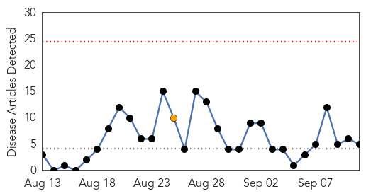
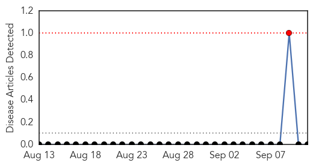

MERS
30-Day Web Trend
0 alerts, 1 warnings

30-Day Twitter Trend
7 alerts, 10 warnings

Article Locations

Article Confidences

Top Articles:
Top Tweets:
- 0.698
- Middle East Respiratory Syndrome coronavirus (MERS-CoV) – Saudi Arabia http://t.co/eqiYh8aDvJ via http://t.co/n9pDMSZEe5
- 0.610
- AFD blog `Saudi MOH: Three New MERS Cases In Madīnah' MERS-CoV http://t.co/qWaUlUYeqo
Hemmorhagic Fever
30-Day Web Trend
1 alerts, 0 warnings

30-Day Twitter Trend
0 alerts, 0 warnings

Article Locations

Article Confidences

Top Articles:
-
No articles found for Sep 11, 2015
Top Tweets:
-
No tweets found for Sep 11, 2015